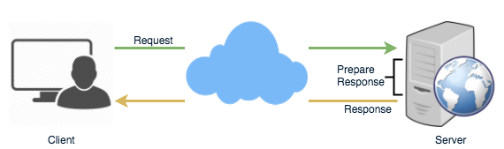
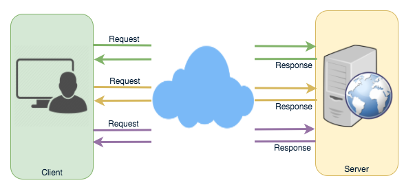
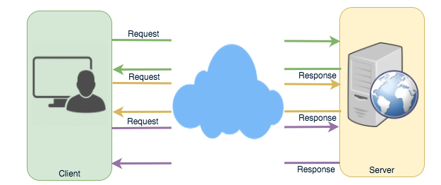
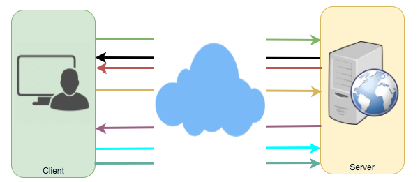
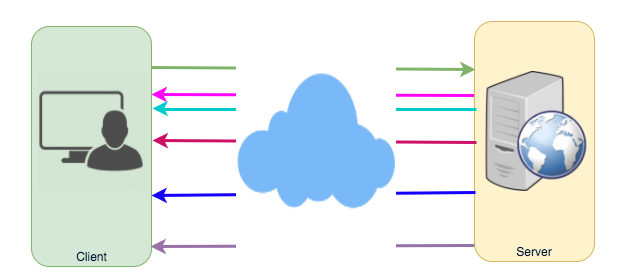

Long-Polling vs WebSockets vs Server-Sent Events
How clients and servers exchange real-time data over HTTP — comparing Ajax polling, HTTP long-polling, WebSockets, and Server-Sent Events.
In this lesson
Long-Polling, WebSockets, and Server-Sent Events are popular communication protocols between a client like a web browser and a web server. First, let's start with understanding what a standard HTTP web request looks like. Following are a sequence of events for regular HTTP request:
- Client opens a connection and requests data from the server.
- The server calculates the response.
- The server sends the response back to the client on the opened request.

HTTP Protocol
Ajax Polling
Polling is a standard technique used by the vast majority of AJAX applications. The basic idea is that the client repeatedly polls (or requests) a server for data. The client makes a request and waits for the server to respond with data. If no data is available, an empty response is returned.
- Client opens a connection and requests data from the server using regular HTTP.
- The requested webpage sends requests to the server at regular intervals (e.g., 0.5 seconds).
- The server calculates the response and sends it back, just like regular HTTP traffic.
- Client repeats the above three steps periodically to get updates from the server.
Problem with Polling is that the client has to keep asking the server for any new data. As a result, a lot of responses are empty creating HTTP overhead.

Ajax Polling Protocol
HTTP Long-Polling
A variation of the traditional polling technique that allows the server to push information to a client, whenever the data is available. With Long-Polling, the client requests information from the server exactly as in normal polling, but with the expectation that the server may not respond immediately. That's why this technique is sometimes referred to as a "Hanging GET".
- If the server does not have any data available for the client, instead of sending an empty response, the server holds the request and waits until some data becomes available.
- Once the data becomes available, a full response is sent to the client. The client then immediately re-request information from the server so that the server will almost always have an available waiting request that it can use to deliver data in response to an event.
The basic life cycle of an application using HTTP Long-Polling is as follows:
- The client makes an initial request using regular HTTP and then waits for a response.
- The server delays its response until an update is available, or until a timeout has occurred.
- When an update is available, the server sends a full response to the client.
- The client typically sends a new long-poll request, either immediately upon receiving a response or after a pause to allow an acceptable latency period.
- Each Long-Poll request has a timeout. The client has to reconnect periodically after the connection is closed, due to timeouts.

Long Polling Protocol
WebSockets
WebSocket provides Full duplex communication channels over a single TCP connection. It provides a persistent connection between a client and a server that both parties can use to start sending data at any time. The client establishes a WebSocket connection through a process known as the WebSocket handshake. If the process succeeds, then the server and client can exchange data in both directions at any time.
The WebSocket protocol enables communication between a client and a server with lower overheads, facilitating real-time data transfer from and to the server. This is made possible by providing a standardized way for the server to send content to the browser without being asked by the client, and allowing for messages to be passed back and forth while keeping the connection open. In this way, a two-way (bi-directional) ongoing conversation can take place between a client and a server.

WebSockets Protocol
Server-Sent Events (SSEs)
Under SSEs the client establishes a persistent and long-term connection with the server. The server uses this connection to send data to a client. If the client wants to send data to the server, it would require the use of another technology/protocol to do so.
- Client requests data from a server using regular HTTP.
- The requested webpage opens a connection to the server.
- The server sends the data to the client whenever there's new information available.
SSEs are best when we need real-time traffic from the server to the client or if the server is generating data in a loop and will be sending multiple events to the client.

Server Sent Events Protocol
Deeper analysis
The four techniques form a spectrum from "fake push over stateless request/response" (polling) to "true full-duplex socket" (WebSocket). The skill that matters is not naming them but reasoning about direction of flow, connection state cost, and how each survives the messy reality of proxies, load balancers, and mobile networks.
Side-by-side comparison
| Property | Ajax Polling | HTTP Long-Polling | SSE (EventSource) | WebSocket |
|---|---|---|---|---|
| Direction | Client→Server (pull) | Client→Server, server holds reply | Server→Client only (half-duplex) | Full-duplex, both ways anytime |
| Transport | Repeated HTTP requests | Repeated HTTP requests (hanging) | One long-lived HTTP/1.1 or HTTP/2 stream, text/event-stream | TCP upgraded via HTTP 101 Switching Protocols |
| Per-message overhead | Full HTTP headers each poll (often 500B–1KB of headers for an empty body) | Full headers per cycle, but only when data exists | Tiny framing (data: lines); no per-message headers after open | 2–14 byte frame header; minimal |
| Latency to deliver | Up to one poll interval (e.g. 500ms–2s stale) | ~Immediate once event fires | ~Immediate | ~Immediate, sub-ms framing |
| Reconnection | N/A (every request is new) | Client re-issues after each response/timeout (manual) | Built-in auto-reconnect + Last-Event-ID replay | Manual; you write reconnect + resync logic |
| Proxy / firewall friendliness | Excellent (plain HTTP) | Excellent (plain HTTP) | Good (plain HTTP; some proxies buffer the stream — disable with X-Accel-Buffering: no) | Weakest — needs Upgrade/Connection headers to survive every hop; corporate proxies and old L7 LBs often strip them. WSS (TLS) tunnels through far better. |
| Binary support | Yes (any payload) | Yes | No — UTF-8 text only (base64 binary if you must) | Yes — native binary frames |
| Browser API | fetch/XHR | fetch/XHR | EventSource (auto-reconnect, no IE) | WebSocket |
| Best fit | Low-frequency, non-critical freshness (e.g. unread-count badge every 30s) | Infrequent events where push matters but volume is low (legacy chat, notifications) | One-way server streams: live scores, stock tickers, log tailing, LLM token streaming, progress bars | Bi-directional, high-frequency, low-latency: chat, multiplayer games, collaborative editing, trading |
When each wins
- Polling wins when staleness is acceptable and you want zero server-side connection state — a CDN can even cache the response. Cost is wasted requests; tune the interval to the freshness SLA.
- Long-polling wins as the "universal fallback": it works anywhere HTTP works, needs no protocol upgrade, and approximates push. It's how Comet-era chat and many SDKs degrade gracefully. Cost: a held request consumes a server worker/thread unless you use async I/O.
- SSE wins for server-push-only feeds. It is criminally underused: built-in reconnection with
Last-Event-IDgives you at-least-once redelivery for free, and it rides HTTP/2 so a single connection multiplexes with your other requests. This is why LLM token streaming (including the responses you're reading) is almost always SSE, not WebSocket — the flow is one-directional and HTTP-native. - WebSocket wins when both sides talk often and latency matters: Slack/Messenger chat, Figma multiplayer cursors, trading dashboards, game state. You pay with stateful connections, manual reconnect/resync, and proxy fragility.
Scaling: connection state & the C10k → C10M problem
The hard part of all push techniques is that an idle connection still costs memory and a slot. The classic C10k problem (10k concurrent connections per box) was solved by moving off thread-per-connection to event loops — epoll (Linux), kqueue (BSD), IOCP (Windows) — used by nginx, Node, Netty, and Go's runtime. The modern frontier is C10M (10 million connections/box), which needs kernel-bypass and careful memory budgeting: at ~10–50KB of kernel + app buffers per socket, 1M connections alone is 10–50GB of RAM before any application state.
- Connection state is the bottleneck, not CPU. A chat server holding 1M idle WebSockets does almost no work but pins enormous memory and ephemeral-port/file-descriptor tables (raise
ulimit -n, tunenet.ipv4.ip_local_port_range,somaxconn). - Load-balancer stickiness. WebSocket and SSE connections are long-lived and pinned to one backend, so you cannot freely rebalance like stateless HTTP. L7 LBs must support the
Upgradehandshake (AWS ALB and nginx do; older ELB classic did not). A deploy that rolls a backend drops every socket on it — clients must reconnect, causing a thundering herd; mitigate with jittered exponential backoff and connection draining. - Fan-out across the fleet. Because a publisher and a subscriber may land on different boxes, you need a backplane: a Pub/Sub layer (Redis Pub/Sub, Kafka, NATS) routes a message to whichever node holds the target connection. This is exactly the "session/connection registry + delivery service" split you design in 19 Messenger, and the event backbone in 45 EDA.
- Dedicated edge tier. Large systems terminate millions of sockets on a thin "gateway" tier (often Go/Rust/Erlang — WhatsApp famously ran ~2M connections per Erlang box) that holds the connection state, and keep business logic on stateless services behind it.
Fallback strategies
- Layered degradation. Libraries like Socket.IO and SignalR negotiate the best available transport and silently fall back: WebSocket → SSE/long-poll → polling. Always design the graceful-degradation ladder, not a single transport, because corporate proxies, captive portals, and ancient middleboxes still break WebSocket in the wild.
- Heartbeats & dead-connection detection. NAT/firewalls silently drop idle TCP after ~30–120s. Send application-level pings (WebSocket ping/pong frames, SSE comment lines
:keepalive) so you detect half-open connections instead of waiting for a TCP timeout. - Resume / replay. SSE's
Last-Event-IDlets a reconnecting client ask for everything since its last seen event. For WebSocket you build the equivalent yourself with a per-client cursor/sequence number so a reconnect doesn't lose or duplicate messages. - Backpressure. A slow client cannot drain the stream as fast as you push; bound the per-connection send buffer and either drop, coalesce, or disconnect rather than letting memory grow unbounded across millions of sockets.
Mastery check
- Your product needs to stream LLM tokens from server to browser as they're generated. Why is SSE usually the right choice over WebSocket here, and what two built-in SSE features make reconnection cheap?
- You're holding 2 million concurrent WebSocket connections. Explain why memory — not CPU — is the dominant constraint, and name two OS-level limits you'd have to raise before you got there.
- A publisher on backend node A needs to deliver a message to a user whose WebSocket is pinned to node B. Sketch the backplane that makes this work and explain why simple round-robin load balancing breaks long-lived connections.
- Compare HTTP long-polling and Ajax polling in terms of latency and wasted requests. In what proxy/firewall scenario would you deliberately fall back from WebSocket all the way to long-polling?
- During a rolling deploy you drop every socket on a draining node and all clients reconnect at once. What failure mode does this create, and what client-side strategy mitigates it?